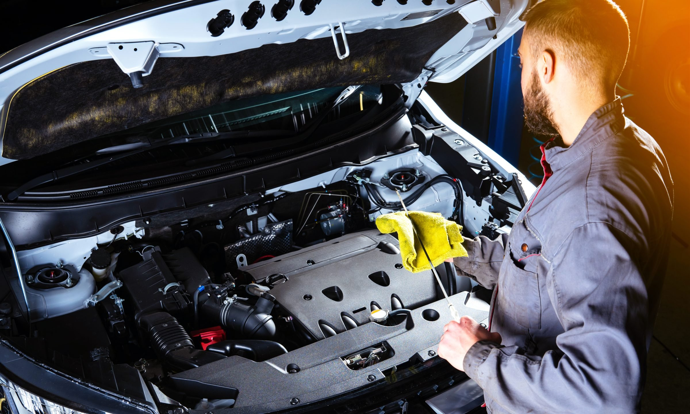

Routine Maintenance
Regular maintenance is key to keeping your Honda running at its best. Follow these simple steps to stay on top of your vehicle's service needs:
- Oil Changes - Change your oil and filter every 5,000-10,000 miles for optimal engine performance and longevity.
- Tire Rotations - Rotate your tires every 5,000-10,000 miles to ensure even tread wear.
- Brake Inspections - Have your brakes checked regularly to identify any wear or issues early.
- Fluid Checks - Inspect and top off vital fluids like engine coolant, transmission fluid, and power steering fluid.
Staying on top of these basic maintenance items will help maximize your Honda's lifespan and maintain its value. Consult your owner's manual for the full maintenance schedule.
Find Auto by VIN number
Maintenance Schedule
Use the table below to stay on track with your Honda's recommended maintenance schedule:
| Maintenance Item | Interval |
|---|---|
| Oil Change | Every 5,000-10,000 miles |
| Tire Rotation | Every 5,000-10,000 miles |
| Brake Inspection | Every 10,000 miles |
| Coolant Flush | Every 30,000 miles |
| Transmission Service | Every 30,000 miles |
| Spark Plug Replacement | Every 60,000 miles |
Honda Genuine Parts

When it's time for maintenance or repairs, always insist on Honda Genuine Parts. These are the same high-quality components used in the original manufacturing of your vehicle. They're designed to fit perfectly and maintain Honda's renowned safety and performance.
Keep Your Honda Running Smoothly
Regular maintenance is essential for prolonging the life of your Honda and ensuring optimal performance. Here are some essential tips:
Regular Check-ups
Schedule regular check-ups at your local Honda dealership to address any potential issues early on.
Fluid Checks
Monitor engine oil, coolant, brake fluid, and transmission fluid levels regularly.
Tire Maintenance
Check tire pressure monthly and inspect for wear and tear.
Battery Care
Ensure your battery terminals are clean and tight. Consider replacing the battery every 3-5 years.
Filter Replacements
Replace air filters and cabin air filters as recommended in your owner's manual.
Additional Tips
- Follow the maintenance schedule outlined in your owner's manual.
- Use high-quality parts and fluids.
- Listen for any unusual noises or changes in performance.